Creative Code / Digital Art
Assignment: create an algorithmic art sketch
STEP 1 Experimenting: I decided to focus on rotation and triangles. As a result most of my early versions looked like flowers.

We were studying math functions in p5.js. I was particularly interested in adding randomness. Eventually, I added randomness to the alpha value of the colors, used it as a random walker, in the rotation angle and the size of my triangles.
My experiments felt chaotic and out of control at the time, but often resulted in beautiful artwork.

STEP 2 Coding
My approach to coding is to take one step at a time.
First I created a rotating triangle. Then I added constraints and moved the triangles around the screen. They were still a single red color, as you can see on the left.
Finally, I change the colors, making the triangles on the right of the screen gradually turn yellow.
I slowly built up my code complexity.
STEP 3 Final
Lastly, I organized my thoughts and finished my documentation for the project. It felt like every week I was telling a story about my coding adventures.
 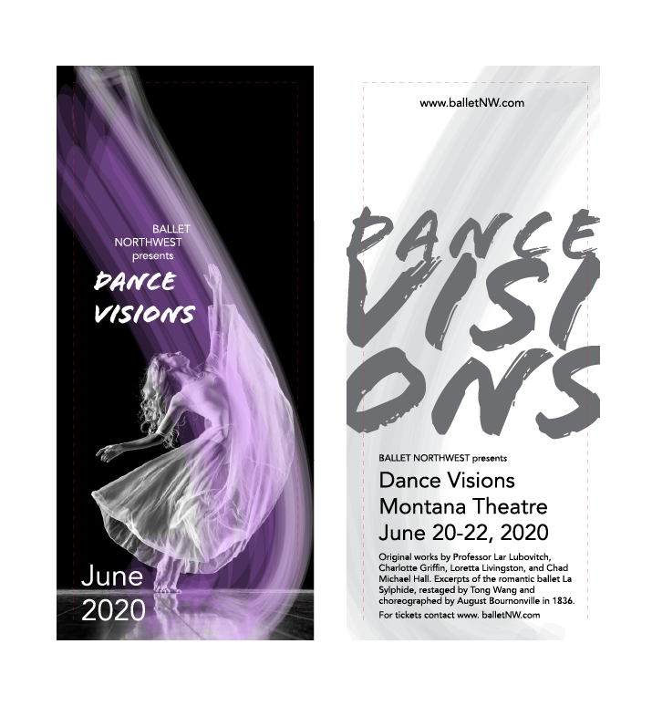
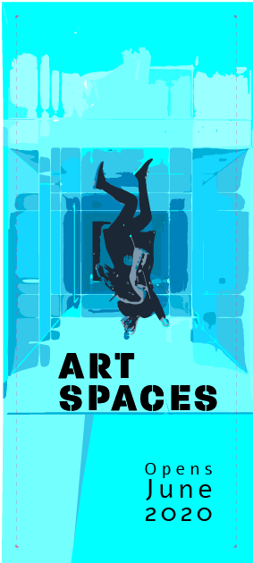
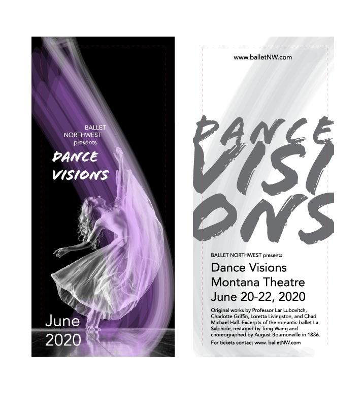
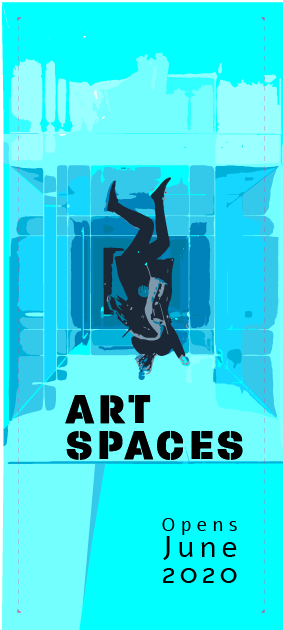
 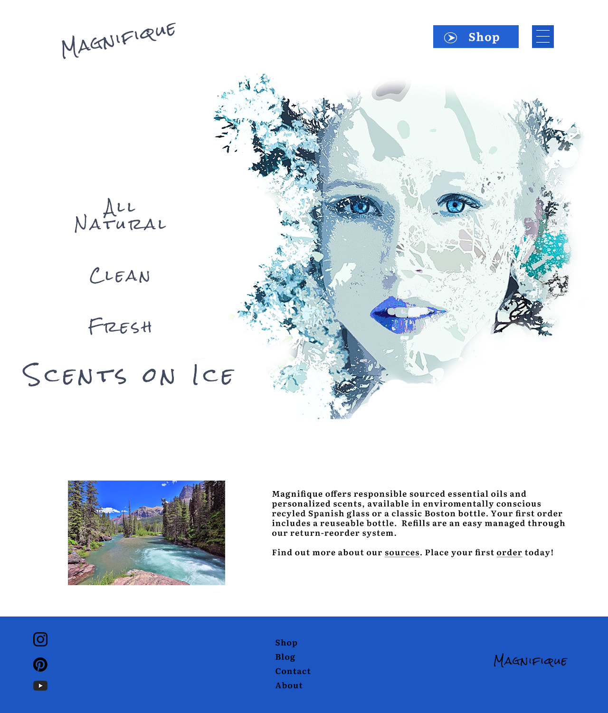
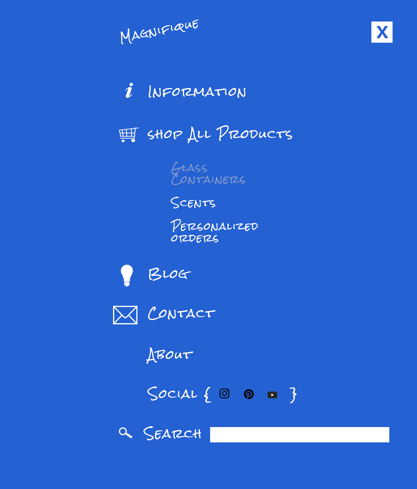
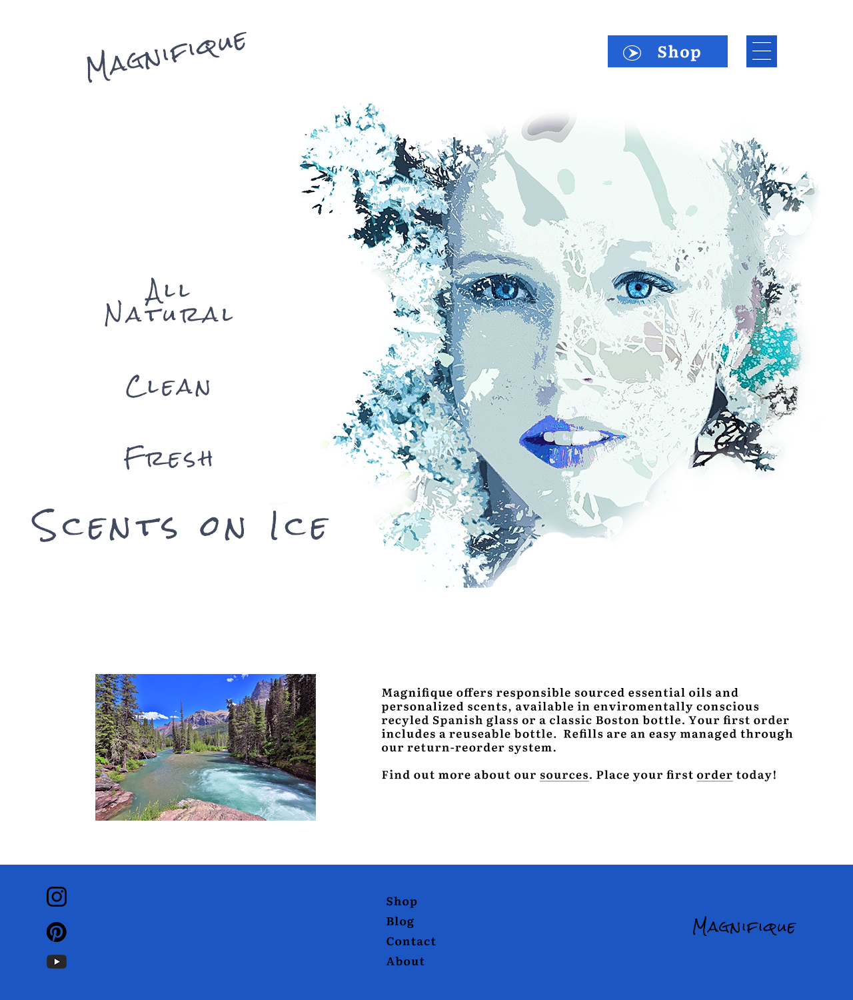
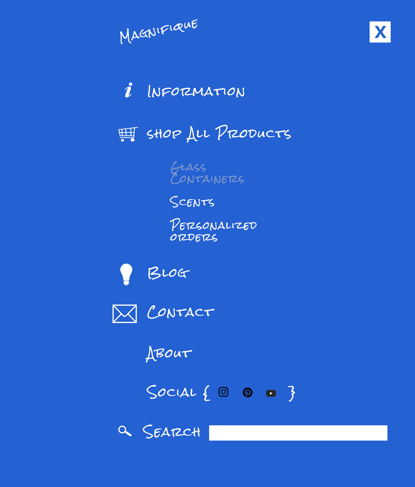
 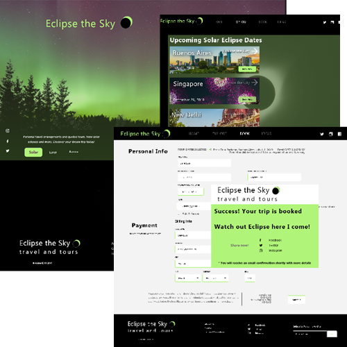
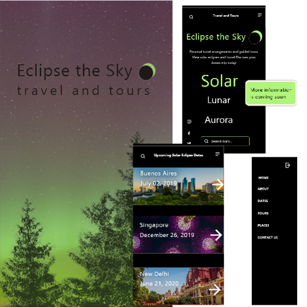
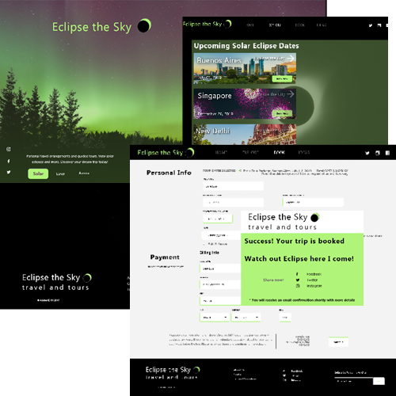
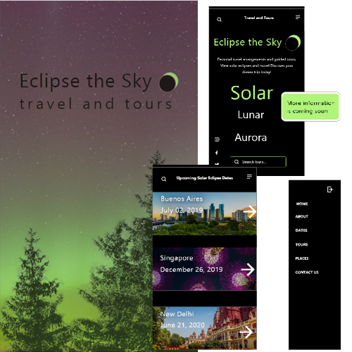